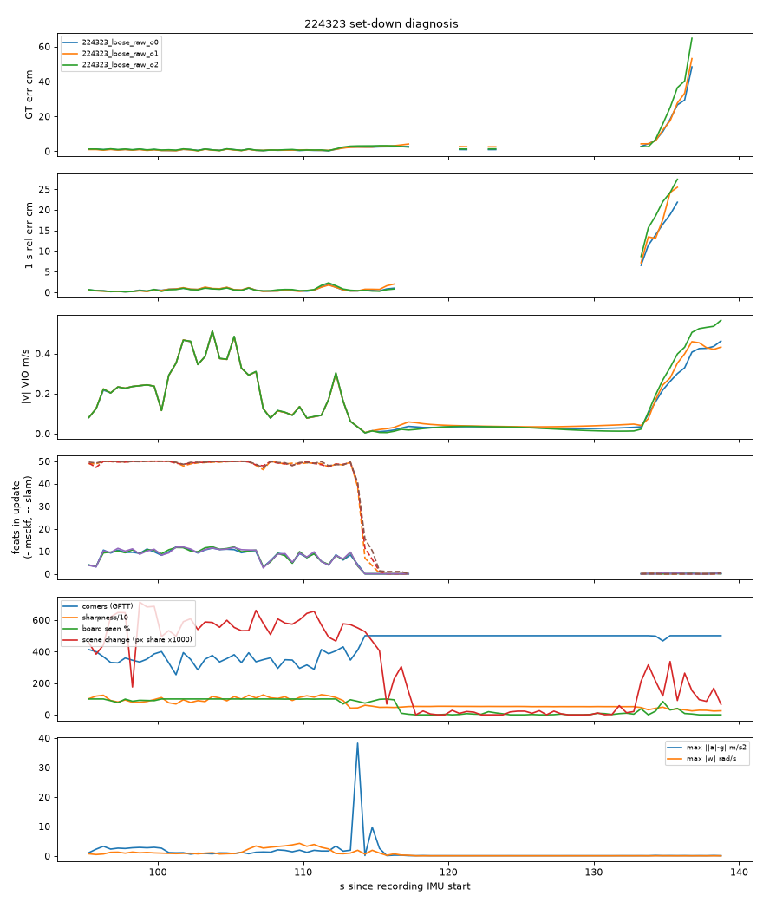
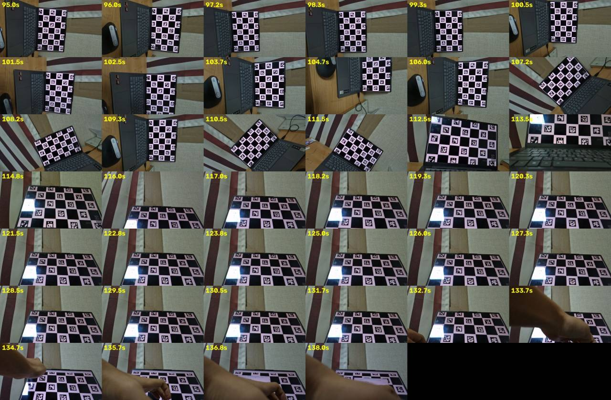
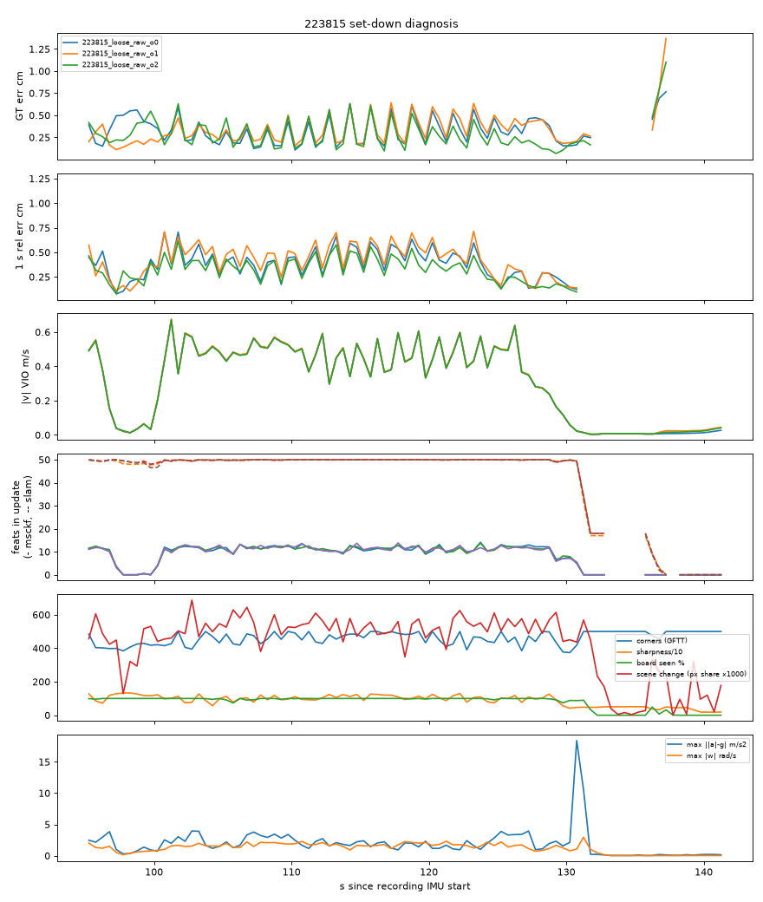
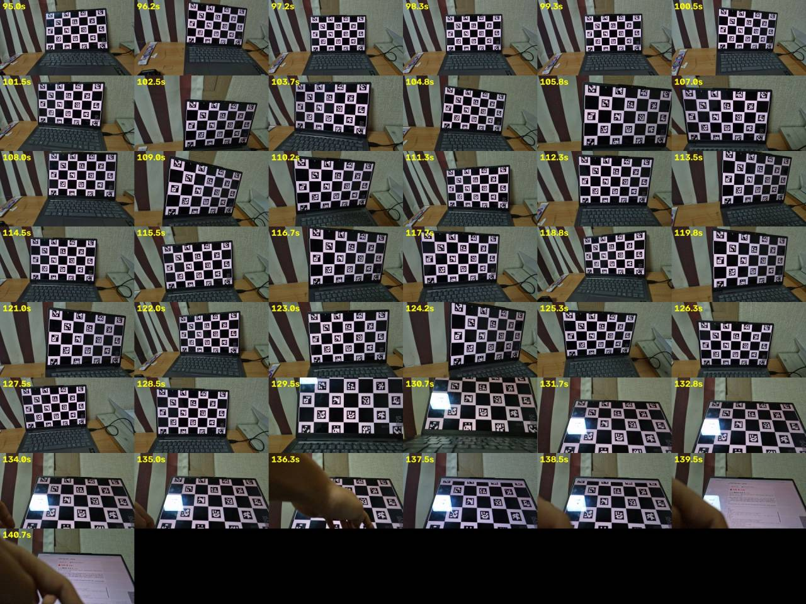

새 VIO 실행 없음. 기존 원본 IMU 실행 runs/endstill_vio/{224323,223815}_loose_raw_o{0,1,2} (전 구간, loose 설정, 시작 위치 3 개)의 OpenVINS DEBUG 로그와 포즈 줄, 녹화의 원본 IMU(유형 16/35), 영상(cam5.mp4, 0.25 s 마다 처음부터 순서대로 디코드), 정답 판 검출(imu_gt/gt.npz). 시각은 녹화의 첫 IMU 표본부터 잰 초 (docs/endstill_check.html 과 같은 기준). 점검 목록은 docs/init_window_plan.md 실험 2 에 실행 전 등록. 코드 imu_learn/endstill_setdown.py, 결과 runs/setdown/{224323,223815}.json.
정정 (작업 중 발견): 처음 그림은 OpenCV 프레임 이동(CAP_PROP_POS_FRAMES)으로 영상을 읽었는데 약 5 s 어긋나 손이 127 s 에 나오는 것처럼 보였다. 처음부터 순서대로 읽게 고친 뒤 손은 132.7–133.7 s, 충격 프레임은 113.5 s 근처로 IMU 충격(113.84 s)과 맞는다. 아래 숫자는 모두 고친 뒤 값.
| 시각 (s) | 무슨 일 | 근거 |
|---|---|---|
| ~110–113.5 | 판을 비스듬히 보며 내려옴 | 영상 |
| 113.84 | 탁자에 내려놓음: |a| − g = 38.2 m/s² (|a| ≈ 4.9 g), 114.5 s 에 두 번째 작은 충격 9.7 m/s² | 원본 가속도 |
| 114–116 (정정: 114–115 → 114–116) | SLAM 특징 49 → 10–20 (114 s) → 1–3 (115 s) → 0–1 (116 s) (정정: 처음 쓴 값 7–16 → 0 을 검산값으로) (3 실행 모두). MSCKF 갱신 특징 0 | 포즈 줄 n_slam, 로그 "SLAM update (N feats)" |
| 115–132.5 | 정지. ZUPT 통과율 100 % (117.5 s 부터), 시차 0.04–0.08 px. VIO 이동 15 s 동안 2.9–4.5 cm, 속도 0.01–0.05 m/s. 정답 오차 0.9–2.4 cm (정답 있는 곳만) | 로그 ZUPT, 포즈 |
| 117 → | 판 검출 0–20 % (비스듬해서) → 정답이 대부분 끊김 | imu_gt ok |
| 133.0 | 손이 들어옴 (장면 변화 0.21–0.34). ZUPT 실패 시작: 시차 1.0–1.4 px, 추적 특징 182 → 108–142 | 영상 차이, 로그 |
| 133–137 | 폰은 정지 (자이로 최대 0.036 rad/s). VIO 속도 0.03 → 0.41–0.51 m/s (136.5 s), 오차 2.7 → 48–65 cm. 갱신 특징 0–0.2 | IMU, 포즈, 정답 |
| 137–138.8 | ZUPT 가 가끔 통과(62–92 %) 해도 속도는 0.42–0.57 m/s 그대로 (약한 ZUPT 잡음 배수 10) | 로그 |


| 시각 (s) | 무슨 일 |
|---|---|
| 130.65 | 내려놓음: |a| − g = 18.4 m/s² (|a| ≈ 2.9 g) — 224323 보다 약함 |
| 131–132 | SLAM 특징 50 → 32 → 17 (0 이 아님) |
| 132–135.5 | 정지, ZUPT 통과 61–100 %, VIO 이동 0–0.1 cm |
| 136–137 | 손 들어옴 (장면 변화 0.25–0.33), ZUPT 실패 (통과 0–5 %). SLAM 특징 9 개 남아 VIO 이동 0.2–0.8 cm / 0.5 s, 오차 0.5–1.4 cm 로 버팀 |
| 137 | 화면 내용이 바뀜(판 닫힘), SLAM 특징 0 |
| 140–141.5 | ZUPT 통과 15–30 % 로 떨어짐, VIO 속도 0.01 → 0.04 m/s 로 오르기 시작 — 녹화 끝 (정답 없음) |
223815 의 전체 ATE 는 0.41–0.45 cm 로 괜찮았지만, 같은 구조(특징 0 + ZUPT 실패 = IMU 만 적분)가 마지막 1.5 s 에 시작됐다. 추정: 녹화가 길었거나 손이 특징이 남아 있지 않을 때 들어왔으면 224323 처럼 됐을 것.


| 후보 원인 | 판정 | 근거 |
|---|---|---|
| 정지 중 장면 움직임(손)으로 ZUPT 실패 | 확인 | ZUPT 실패 시작 133.0 s = 손 들어온 프레임, 그 전 18 s 는 통과 100 % |
| 갱신에 쓸 특징 0 (SLAM 사라짐, MSCKF 시차 없음) | 확인 | 114.5 s 부터 끝까지 MSCKF·SLAM 갱신 특징 0–0.2 |
| 충격 때문에 SLAM 특징이 사라짐 | 추정 | 시각은 정확히 겹침 (113.84 s 충격 → |
| IMU 포화 (가속도·자이로) | 아님 | 최대 30 % / 12 % of range, 95 % 넘는 표본 0 |
| 흐림 | 아님 (실패 구간) | 실패 구간 폰 정지; 선명도는 손 때문에만 변함 |
| 카메라가 탁자에 너무 가까움 | 아님 | 영상: 노트북 화면을 30–40 cm 거리(추정)에서 비스듬히 봄, 모서리 점 500 (상한) |
| 판이 시야 밖 | 정답에만 영향 | 117 s 부터 판 검출 0–20 %; VIO 는 판을 쓰지 않음. 오차 18–29 cm 는 판이 일부 다시 잡힌 133–137 s 값 |
| Android 바이어스 계단 | 무관 | 원본 16/35 IMU 실행 |
| 대책 | 이 녹화에서 무엇을 막나 | 주의 |
|---|---|---|
| ① ZUPT 에 IMU 정지 판정 추가 (zupt_chi2_multipler > 0, 또는 자이로·가속도 분산이 작으면 ZUPT) | 133–138.8 s 의 IMU 만 적분 (폰은 정지였음) | 천천히 미끄러지는 움직임을 정지로 오인할 수 있음 → 문턱은 녹화로 정해야 |
| ② 충격 감지 → 착지 상태 (|a| 튐 + 뒤이은 IMU 정지 → 위치 고정, 다시 뜨기 전 정적 재초기화) | 정지 구간 전체 | 드론 착지 충격 크기는 폰을 손으로 놓을 때와 다름 → 실제 착지 녹화 필요 |
| ③ 특징 수 게이트 (갱신 특징 0 + ZUPT 실패가 N 프레임 → "믿을 수 없음") | 133.0 s 에 바로 경고 (오차 2.7 cm 일 때) | 막지는 못하고 알리기만 함 — 가장 쉽고 안전 |
| ④ 정지 중에도 SLAM 특징 유지·보충 | ZUPT 실패 때 버팀목 (223815 처럼) | OpenVINS 내부 동작 변경 → 범위 큼 |
재현: ../venv_ffs/bin/python imu_learn/endstill_setdown.py → runs/setdown/. 숫자는 runs/setdown/*.json 의 0.5 s 칸 값 (3 실행 범위로 적음).
(정정 2026-10-21, docs/initwin_setdown_verify.md: 처음 커밋한 check.txt 는 검색을 117.0 s 부터 해서 정지 진입 직후 실패(117.01 s)를 잡았고, 아래 표의 133.23/133.33/133.28 은 check.txt 값이 아니었다. 스크립트 검색 시작을 117.5 s 로 고쳐 check.txt 를 다시 만들었고, 이제 표 값과 같다.)
| 항목 | 문서 값 | 다시 계산 | 맞음? |
|---|---|---|---|
| 224323 ZUPT 연속 실패(5 프레임) 시작 | 133.0 s 칸 | 133.23 / 133.33 / 133.28 s (3 실행) | 맞음 (같은 0.5 s 칸) |
| 224323 115 s 뒤 갱신 특징 평균 | 0–0.2 | 0.02–0.05 | 맞음 |
| 224323 마지막 |v| | 0.46–0.57 m/s (칸 평균) | 0.43 / 0.49 / 0.58 (마지막 포즈) | 맞음 (범위 근사) |
| 224323 충격 | 113.84 s, 38.2 m/s² | 113.84 s, 38.2 | 맞음 |
| 최대 |a| 축·|w| 축 | 47 / 4.2 (224323), 28 / 2.95 (223815) | 47.2 / 4.22, 28.1 / 2.95 | 맞음 |
| 223815 ZUPT 연속 실패 시작 | 136 s 칸 | 135.82 / 135.91 / 136.04 s | 맞음 (135.5–136 칸 걸침) |
| 223815 충격 | 130.65 s, 18.4 m/s² | 130.65 s, 18.4 | 맞음 |